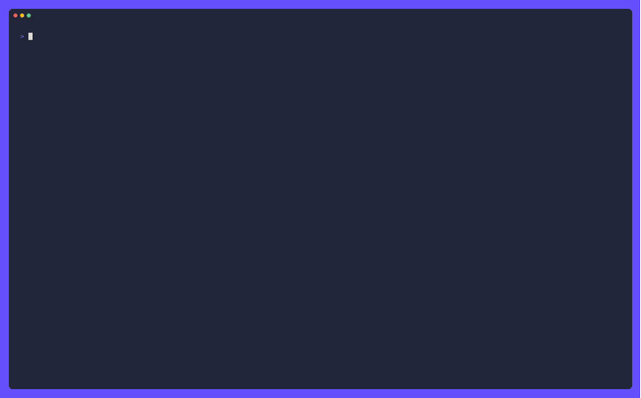

Running Mistral in a multi-provider CLI: prefix routing, prompt caching, and finish reasons
Adding a new LLM provider to a tool that already speaks to Claude, OpenAI, Gemini, and Grok sounds mechanical — implement the request, map the response, ship it. The Mistral integration in pi-go turned out to be a series of small, sharp lessons, each one a bug that only shows up against the live API, never in a unit test.

Lesson 1: prompt_mode is not reasoning_effort
pi-go’s default thinking level is “high”. When the Mistral provider was first written, it translated that into prompt_mode: "reasoning" on the wire for the magistral family — because the reference implementation the plan was drawn from uses Mistral’s conversations API, which takes prompt_mode.
But chat completions is a different endpoint. It answers:
400 "Reasoning prompt mode is not enabled for this model" (code 3051)
on every magistral request. The field belongs to the conversations API, not this one. The fix was to delete the prompt_mode branch entirely — magistral takes reasoning_effort like everything else.
The lesson: when you copy a reference implementation, check which API it targets. The field names look similar, the docs are ambiguous, and the 400 only appears against the real endpoint.
Lesson 2: an allowlist is a trap in both directions
reasoning_effort isn’t accepted by every Mistral model. The allowlist was short, and mistral-medium-latest — the alias most users actually type — wasn’t on it. So --think high was silently dropped on the most popular model.
The tempting fix is prefix-matching: strings.HasPrefix(name, "mistral-medium-"). That’s wrong, and the reason is subtle. mistral-medium-2505 and mistral-medium-2508 answer 400 for reasoning_effort. The two failure directions are not symmetric:
- a missing entry costs you thinking control on that model (silent, annoying);
- a wrong entry kills every request to that model (loud, catastrophic).
So the allowlist stays exact-match on purpose, and an id is listed only once it has been seen to work. The set was verified by probing every small/medium/magistral id in the embedded catalog against the live API — not by reading the docs, which name neither the rejecting tags nor magistral’s actual field.
Lesson 3: finish reasons get swallowed, and the TUI lies to you
Mistral’s finish_reason enum is stop | length | model_length | error | tool_calls. The shared mapper handled length and content_filter and defaulted everything else to Stop. So model_length and error were reported as clean completions.
That’s user-visible, and it’s worse than it sounds. The TUI warns about a truncated reply by watching for FinishReasonMaxTokens. So a Mistral turn cut off at the context limit was presented as a finished one — a turn that just looked short, with nothing said about why. And finish_reason: "error" means generation failed partway; reporting it as Stop claims a success the provider never gave.
The real bug was structural: a mistralFinishReasonToGenai wrapper existed and looked like it owned the mapping, but nothing on the request path called it. The runners called the shared mapper directly. Its test passed while the real path was wrong. The wrapper is gone, and the test now exercises the mapper that actually runs, across the full Mistral enum.
Lesson 4: thinking arrives in the content field, not delta.reasoning
Mistral reasoning models don’t use delta.reasoning the way OpenRouter does. Thinking arrives inside the content field, which switches from a string to a list of typed chunks for the duration of the thinking phase:
[{ "type": "thinking", "thinking": [{ "type": "text", "text": "..." }] }]
The provider has to reassemble those chunks, concatenate the thinking text, and extract it from both streaming deltas and non-streaming responses. And because the openai-go SDK has no fields for prompt_cache_key or reasoning_effort, both go on the wire as extra JSON fields — one call, not two.
What a unit test can’t catch
The recurring theme is that none of these bugs are visible to a unit test. A unit test only sees the body pi-go built — never Mistral’s verdict on it. The prompt_mode 400, the allowlist gaps, and the finish-reason swallowing all needed a live request to surface.
That’s why the e2e test drives one model per class through a real request at the default thinking level. It fails against the previous code with the exact 400 above. If you’re adding a provider, budget for a live-API test from day one — the docs will not save you, and neither will your mocks.
Try pi-go
Open source, MIT licensed, one binary away.